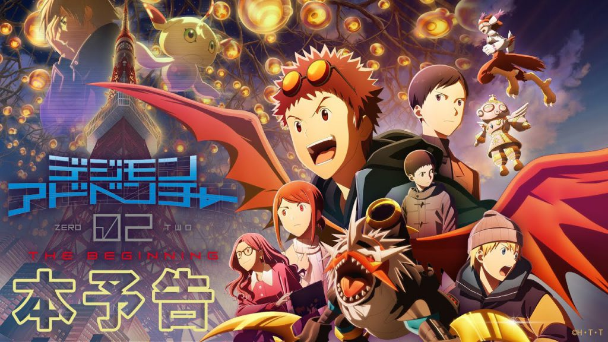
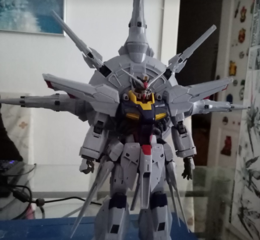
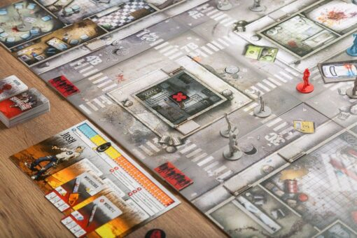

Eventos
-
Cine en Kinépolis
01 de Diciembre
Quedada para asistir al estreno de la película Digimon Adventure 02: The Beginning. La película llegará a nuestro país de la mano de Selecta Vision. Normalmente, estas películas suelen estrenarse en los cines Kinépolis.
El encuentro empezará por la tarde, antes del comienzo de la sesión, para entrar al cine todos/as juntos/as. Acabada la película, cenaremos todos/as juntos/as y aprovecharemos para comentar la película y nuestras impresiones sobre ella.
-
Taller de Cosplay
18 de Noviembre
De la mano del cosplayer que lució la armadura de Wargreymon en el Ficzone 2022, tendremos un taller para aprender a construir nuestras propias armaduras. Nos hablará acerca de materiales y resolverá las posibles dudas que vayan surgiendo.
-
Montaje de Maquetas
04 de Noviembre

La regla principal, antes de empezar a montar una maqueta, es la de armarse de paciencia. El montaje de maquetas es un gran pasatiempo que requiere de tiempo y paciencia para que el resultado sea el mejor posible.
Elegiremos algunos diseños de nivel fácil o intermedio, y montaremos nuestra propia maqueta todos juntos.
-
Granada Gaming 2023
18 de Noviembre
Quedada para asistir al festival videojuegos, esports y tecnología. Granada Gaming es uno de los grandes eventos para la cultura gamer en Granada.
El encuentro empezará por la mañana temprano para hacer cola y entrar. Participaremos en todas las actividades posibles y pasaremos un día agradable en grupo. El día acabará tomándonos algo juntos/as.
-
Juegos de Mesa
Por determinar (Granada)
Para esta actividad pasaremos la tarde en el Continental Café Pub y jugaremos a distintos juegos de mesa. Tendremos, pues, una tarde relajada donde podremos charlar y divertirnos juntos/as con los juegos de mesa que mas gusten a los/as asistentes.